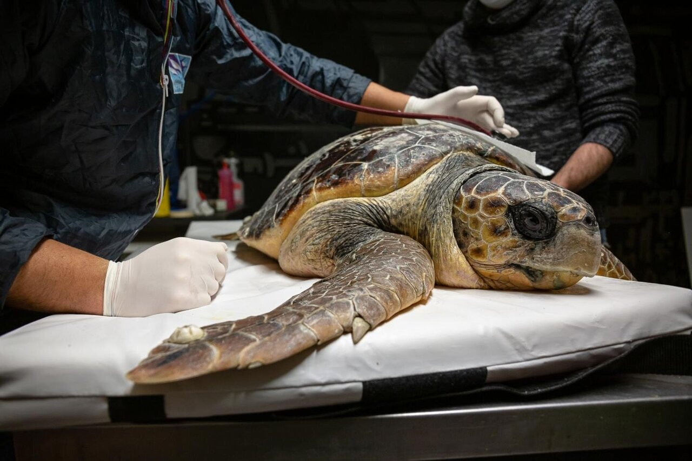
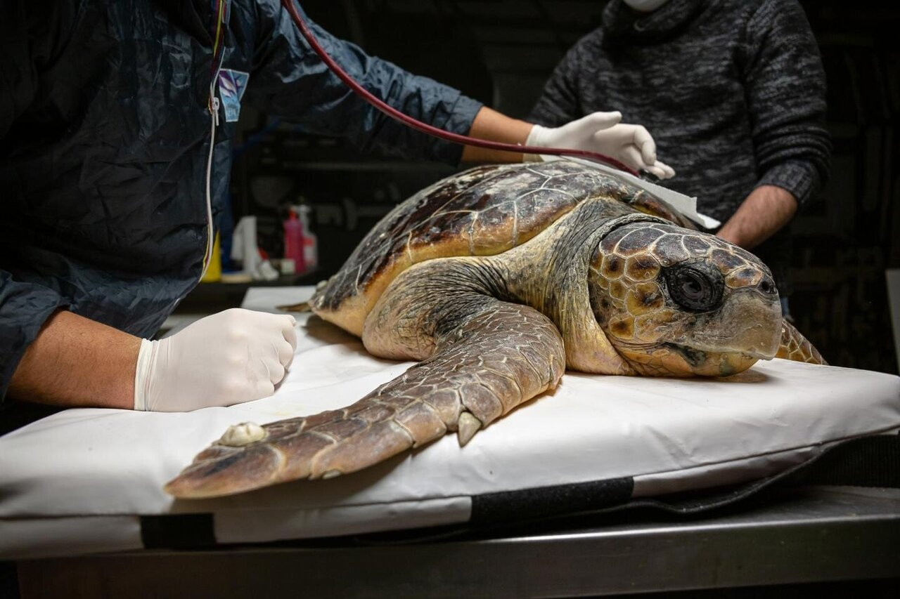

Kosgoda Turtle Hatchery

The Turtle Care Centre at Kosgoda beach is one of 18 turtle hatcheries along the southern coast of Sri Lanka. The centre is located in the South Western coastal village of Kosgoda and was establised in 1981. It is also very popular as all five species of turtles that visit Sri Lanka nest in Kosgoda.
This is not so with many of the other hatcheries around the island whose beaches host only some of
the species. The centre functions mainly as a hatchery and makes huge efforts to increase the rate
of hatching, and survival of baby turtles in their very initial stages.
However the Care centre also works on sick or injured adults; treating them and releasing them back
into the ocean. They also run
volunteer programs and awareness programs for local and international visitors.
 

location of the hathery
The hatchery works in the following steps:
1.Staff patrols beach at nights looking for mother sea turtles that come out of the sea to lay eggs.
2.They protect the mother from afar during the nesting process, until she finishes laying the eggs
and returns to the ocean.
3.The eggs are relocated from beach to hatchery to protect them from predators and irresponsible
human action.
4.In addition fishermen are also paid to bring any turtle eggs they find to the hatchery.
5.The eggs develop and hatch in a protected area. This may take between 45-60 days.
6.The hatched turtles are released into the ocean on the same day if no complications arise.This is
to avoid human interference in their lifestyles as much as possible.